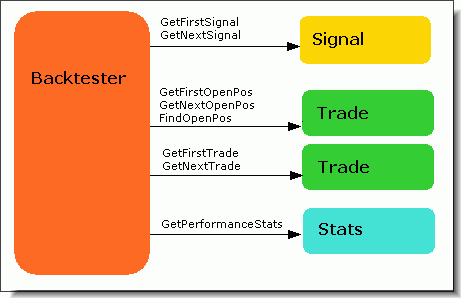

Portfolio Backtester Interface Reference Guide
(Updated February 20th, 2010 to cover enhancements and additions introduced
in AmiBroker 5.30.0)
Basics
AmiBroker version 4.67.0 exposes a new object-oriented interface to the portfolio
backtester, allowing control over the second phase of the backtest. This allows a multitude
of applications, including but not limited to:
- position sizing based on portfolio-level equity
- implementing advanced
rotational systems (you now have access to ranking arrays and can
decide what trades to take after knowing which symbols
score best on a bar-by-bar basis)
- adding your custom metrics to backtest
and optimization statistics
- implementing custom formulas for slippage
control
- advanced scaling-in/-out based on portfolio equity and other
run-time stats
- advanced trading systems that use portfolio-level statistics
evaluated on a bar-by-bar basis to decide which trades
to take
This document describes all objects, methods, and properties exposed by the portfolio
interface.
Requirements
To use the new interface, the user needs AmiBroker 4.67.0 or higher
and needs to have AFL coding skills, including understanding the terms: an
object, method, and property.
Various approaches for various applications
The portfolio backtester interface supports various approaches to the customization
of the backtest process that suit different applications.
- high-level approach (the easiest)
- using the Backtest() method, it runs the
default backtest
procedure (as in old versions) and allows simple implementation of custom metrics
- mid-level approach
-
using PreProcess()/ProcessTradeSignal()/PostProcess()
methods, which allow modification of signals and querying of open positions (good for advanced
position sizing)
- low-level approach (the most complex)
- using PreProcess()/EnterTrade()/ExitTrade()/ScaleTrade()/UpdateStats()/HandleStops()/PostProcess()
methods, which provide full control over the entire backtest process for hard-coded
programmers only
Getting access to the interface
To access the new portfolio backtester interface, you need to:
- enable custom backtesting procedure by calling:
SetOption("UseCustomBacktestProc", True );
or calling
SetCustomBacktestProc( "C:\\MyPath\\MyCustomBacktest.afl" );
in your formula
or by enabling it in the Automatic Analysis->Settings window, "Portfolio" tab,
and specifying an external custom procedure file.
- get access to the backtester object by calling the GetBacktesterObject() method.
Note that the GetBacktesterObject() method should only be called when Status("action")
returns actionPortfolio:
if( Status("action")==
actionPortfolio )
{
// retrieve the interface
to portfolio backtester
bo = GetBacktesterObject();
...here is your custom backtest formula.
}
When using an external custom procedure file, you don't need to check for actionPortfolio,
because external backtest procedures are called exclusively in actionPortfolio
mode.
Typing Conventions
- bool - italic represents the type of parameter/variable/return
value (Trade, Signal, Stats - represent the type of object returned)
- AddSymbols - bold represents a function / method / property
name
- SymbolList - underline typeface represents a formal parameter
- [optional] - denotes an optional parameter (one that does not need to
be supplied)
- variant - represents a variable type that can be either a string
or a number
Despite the fact that the interface handles integer data types such as long,
short, bool, and two different floating-point types: float and double, AFL itself converts all those data types to float because AFL treats all numbers
as floats (32-bit IEEE floating-point numbers).
Objects
The interface exposes the following objects:
- Backtester object
- Signal object
- Trade object
- Stats object
The only object directly accessible from AFL is the Backtester object; all other
objects are accessible by calling Backtester object methods, as shown in the
picture below.

Backtester object
The Backtester object allows control over the backtest process (processing signals, entering/exiting/scaling
trades) and provides access to the signal list, open position and trade list, and to the
performance statistics object.
Methods:
- bool AddCustomMetric( string Title,
variant Value, [optional] variant LongOnlyValue,
[optional] variant ShortOnlyValue , [optional] variant DecPlaces =
2, [optional] variant CombineMethod = 2 )
This method adds a custom metric to the backtest report, backtest "summary,"
and optimization result list. Title is the name of the metric to be displayed
in the report; Value is the value of the metric. Optional arguments LongOnlyValue,
ShortOnlyValue allow for providing values for additional long/short-only
columns in the backtest report. The DecPlaces argument controls how many
decimal places should be used to display the value. The last CombineMethod
argument defines how custom metrics are combined for the walk-forward out-of-sample
summary report
Supported CombineMethod values are:
1. First step value: the summary report will show the value of the custom metric from
the very first out-of-sample step.
2. Last step value (default): the summary report will show the value of the custom metric
from the last out-of-sample step.
3. Sum: the summary report will show the sum of the values of the custom metric from
all out-of-sample steps.
4. Average: the summary report will show the average of the values of the custom metric
from all out-of-sample steps.
5. Minimum: the summary report will show the smallest value of the custom metric from
all out-of-sample steps.
6. Maximum: the summary report will show the largest value of the custom metric from
all out-of-sample steps.
Note that certain metric calculation methods are complex; for example, averaging them would not lead to a mathematically correct representation of all out-of-sample tests.
Summaries of all built-in metrics are mathematically correct out-of-the-box (i.e., they are *not* averages but properly calculated metrics using a method that is appropriate for a given value). This contrasts with custom metrics because they are user-definable, and it is up to the user to select a 'combining' method; it may still happen that none of the available methods is appropriate.
For that reason, the report includes a note that explains what user-definable method was used to combine custom metrics.
- bool Backtest( [optional] bool NoTradeList )
This high-level method performs the default portfolio backtest procedure in a single
call. It should be used if you just need to obtain custom metrics and do not want
to change
the way
the backtest is performed. (Version 4.68.0 and above): If the optional parameter NoTradeList is
set to True, then a trade list is not generated automatically. This is useful
if
you
want to add some per-trade metrics. Once you add them, you can generate a trade
list with your metrics using the ListTrades method.
- long EnterTrade( long Bar, string Symbol, bool bLong, float Price, float PosSize, [optional]
variant PosScore, [optional]
variant RoundLotSize, [optional] variant MarginDeposit,
[optional] variant TickSize, [optional] variant PointValue )
A low-level method that enters a trade on any symbol. This allows trades to be taken
even on symbols that have no corresponding signals. If values for optional
parameters are not provided, then AmiBroker uses values defined in the Symbol->Information
window.
- long ExitTrade( long Bar, string Symbol, float Price, [optional]
variant ExitType )
A low-level method that exits a trade on any symbol. This method searches the open
trade list, and if there is no open trade on a given symbol, it does nothing. The optional
ExitType parameter specifies the reason for exit (1 - regular exit, 2 - max.
loss, 3 - profit, 4 - trail, 5 - N-bar, 6 - ruin).
- Trade FindOpenPos( string Symbol )
This method looks for the Symbol in the open position list and returns
a matching trade object if it finds one, or returns a null object otherwise.
- Signal FindSignal( long Bar, string Symbol,
long Type ) - new in v5.10
where bar is a bar number, and
type represents the type of signal to find: 0 - both entries and exits, 1 - only
entries, 2 - only exits.
The method searches for the first matching signal that has fPrice != -1 (different
from -1). If 0 is used as the type, and an entry and exit are on the same bar, then
the entry signal will be returned. Note: fPrice = -1 is a special marker meaning
that the given signal should be ignored.
-
long GetSignalQty( long Bar,long Type ) -
new in v5.30
where bar is a bar number, symbol is the ticker symbol, and type represents the type of signal
to find: 0 - both entries and exits, 1 - only entries, 2 - only exits.
The method retrieves the number of signals occurring on a given bar. Note
that AmiBroker, to conserve memory, keeps track of only 2 * MaxNumberOfPositions entry signals on any single bar; however, it keeps track of ALL exit signals
(because they consume much less space, and at the time of signal collection,
it is not known which positions are already open, so all exits must be
tracked to prevent missing an exit).
IMPORTANT NOTE: GetSignalQty() counts each Scale In/Out signal
as 2 (not 1). Regular entries and regular exits are counted as 1. This
is for technical reasons, as scale in/out occupy two slots in the
highly compressed signal table. The proper and only way to find signals
is through iteration using the GetFirstSignal/GetNextSignal methods.
- Trade GetFirstOpenPos()
This method returns the first Trade object from the open position list.
- Signal GetFirstSignal( long Bar )
This method returns the first trading Signal object for a given Bar.
- Trade GetFirstTrade()
This method returns the first Trade object from the closed trade
list.
- Trade GetNextOpenPos()
This method returns the next Trade object from the open
positions list. You should call GetFirstOpenPos() before calling this method
for the first time. Returns a null object when no more open positions are found.
- Signal GetNextSignal( long Bar )
This method returns the next Signal object from the closed signal list of
a given Bar. You should call GetFirstSignal() before calling this method
for the first time.
Returns a null object
when no more signals are found.
- Trade GetNextTrade()
This method returns the next Trade object from the closed trade
list. You should call GetFirstTrade() before calling this method
for the first time. Returns
a null object when no more trades are found.
- long GetOpenPosQty()
This method returns the number of currently open positions.
- Stats GetPerformanceStats( long Type )
Calculates built-in statistics and metrics and returns a Stats object.
The Type parameter specifies which trades should be counted. Type
= 0 means all trades, Type = 1 means long-only, Type = 2 means short-only.
- HandleStops( long Bar )
This low-level method handles automatic stops (applystops). This
method MUST NOT be used in high-level and mid-level approaches. In low-level mode, you
should call this method once for each bar inside the trading loop.
- ListTrades()
(Version 4.68.0 and above) This outputs trades to the result list of the Automatic
Analysis window. Usually, this function does NOT need to be called because the Backtest()
method by default lists trades already. This function should only be used
when you disabled trade listing in the Backtest() method to add some custom per-trade
metrics.
- PostProcess()
This mid-level and low-level method performs the final processing required to
complete the backtest correctly. Among other things, it frees the price cache, closes
out any open trades, and outputs the trade list to the Automatic Analysis window.
It should
NOT be
used when you call the Backtest() method because Backtest() already performs
the necessary processing.
- PreProcess()
This mid-level and low-level method performs the initial processing required
to perform the backtest correctly. Among other things, it initializes the price cache
and sets up initial variables. It should NOT be
used when you call the Backtest() method because Backtest() already performs
the necessary processing.
- bool ProcessTradeSignals( long Bar )
This mid-level method processes all trading signals for a given bar. It should
be called once per every bar in your custom backtesting loop.
- RawTextOutput( string Text )
(Version 4.68.0 and above) This method outputs any string to the Automatic Analysis result list at
the time of the call. The user can output text formatted in multiple columns
using
the \t
(tab)
character.
- long ScaleTrade(long Bar, string Symbol, bool bIncrease,
float Price, float PosSize, [optional] variant Deposit)
A low-level method that scales a trade on any symbol. This method searches the open
trade list, and if there is no open trade on a given symbol, it does nothing. The optional
Deposit parameter specifies the margin deposit for futures; if not given,
then the Price parameter
is used.
- UpdateStats( long Bar, long TimeInsideBar )
A low-level method that updates equity, exposure, trade excursions (for MAE/MFE
calculations), and other internal variables required for the correct calculation
of statistics. You must NOT use
this function in high-level and mid-level approaches. The TimeInsideBar parameter
specifies the intraday time position. TimeInsideBar = 0 means the opening of the
bar, TimeInsideBar = 1 means the middle
of the bar, TimeInsideBar = 2 means the end of the bar. As certain internal calculations
depend on end-of-bar calculations, this method must be called once and only
once with the TimeInsideBar parameter
set to 2 at the end of processing every bar inside your custom backtesting
loop. May be called zero or more times for every bar inside the backtesting loop
with the TimeInsideBar parameter set to 0 (zero) or 1.
- GetMonteCarloSim()
Gets the instance of the MonteCarloSim object to access MC distributions.
Properties:
- double Cash
Available funds (cash) in your portfolio.
- double Equity
Current portfolio-level Equity (read-only property).
- array EquityArray
Portfolio-level Equity array (read-only property).
Note: Since version 5.50, the backtester object now has an EquityArray property that
returns the entire equity array (not just the current value).
Please note that values are filled during the backtest, and only after the backtest is
complete, are all values valid. If you call it in the middle, it will contain
only "up to a given point" data. Avoid abusing this function, as it is
costly in terms of RAM/CPU.
You may use
bo.EquityArray instead of Foreign("~~~Equity", "C")
in custom backtester code.
- double InitialEquity
Funds that are available at the beginning of the backtest.
- double MarginLoan
Loan amount (only if you are using a margin account)
(read-only property).
Signal object
A Signal object represents a trading signal (buy/sell/short/cover) or a ranking
array element generated by AmiBroker during the first phase of backtest when your
formula is executed on every symbol under test. During this first phase scan, AmiBroker collects data from buy/sell/short/cover signal, price, position size,
and score arrays, performs sorting of signals, and puts top-ranked entry signals
and all scale and exit signals into the list. A separate list of trading
signals is maintained for every bar. The signal list is sorted so that first entry signals
appear
(top-ranked first), and after that, scaling and exit signals follow. To conserve
memory, AmiBroker stores only (2*MaxOpenPositions) top-ranked entry signals per
bar. It keeps, however, all exit and scaling signals. Once the first phase is completed
and the backtester enters the second phase (real backtest), it
iterates
through
bars and
through
all signals
within a given bar and executes trades based on these signals.
To iterate through the signal list, you should use the GetFirstSignal() / GetNextSignal()
methods of the Backtester object, as shown below:
// retrieve the interface to portfolio backtester
bo = GetBacktesterObject();
for( i = 0;
i < BarCount; i++ )
{
for( sig = bo.GetFirstSignal( i ); sig; sig
= bo.GetNextSignal( i ) )
{
if( sig.IsEntry() )
{
// handle entry signal
....
}�
}
bo.ProcessTradeSignals( i );
}
Methods:
- bool IsEntry()
True if this is an entry signal; False otherwise.
- bool IsExit()
True if this is an exit signal; False otherwise.
- bool IsLong()
True if this is a long entry (buy) or long exit (sell) or scale-in signal;
False otherwise.
- bool IsScale()
True if this is a scale-in or scale-out signal; False otherwise.
Properties:
- float MarginDeposit
Margin deposit (for futures).
- float PointValue
Point value (for futures, currencies).
- float PosScore
Position score.
- float PosSize
Requested position size (positive numbers mean dollar value; negative values
mean percent of portfolio equity).
- float Price
Entry/exit/scale price.
- short int Reason
This specifies the reason for exit (1 - regular exit, 2 - max.
loss, 3 - profit, 4 - trail, 5 - N-bar, 6 - ruin).
- float RoundLotSize
Round lot size.
- string Symbol
Symbol of security.
- float TickSize
Tick size (minimum price change).
- short int Type
This specifies the signal type (0 - rank (rotational systems only), 1
- buy, 2 - sell, 3 - short, 4 - cover, 5 - scale-in, 6 - scale-out).
Trade object
A Trade object represents either a currently open position (open trade) or a closed
trade. AmiBroker maintains two lists of trades: an open position list (accessible
using the GetFirstOpenPos()/GetNextOpenPos() methods of the Backtester object) and closed
trade lists (accessible using the GetFirstTrade()/GetNextTrade() methods of the Backtester
objects). Once an open position is closed by the backtester, it is automatically
moved from the open position list to the trade list. When the backtest is completed
(after a PostProcess() call), AmiBroker closes out all open positions, so the trade list includes
all trades. You can access both lists at any time during the backtest; you can also access the trade list after completion to generate trade-related statistics.
To iterate through the open position list, you should use the GetFirstOpenPos()
/ GetNextOpenPos()
methods of the Backtester object, as shown below:
//
'bo' variable holds Backtester object retrieved earlier
for(
openpos = bo.GetFirstOpenPos(); openpos; openpos = bo.GetNextOpenPos() )
{
//
openpos variable now holds Trade object
}
To iterate through the closed trade list, you should use the GetFirstTrade()
/ GetNextTrade()
methods of the Backtester object, as shown below:
for(
trade = bo.GetFirstTrade(); trade; trade = bo.GetNextTrade()
)
{
//
trade variable now holds Trade object
}
Methods:
- long AddCustomMetric( string Title,
variant Value, [optional] decplaces = 2)
(Version 4.68.0 BETA and above) This method adds a PER-TRADE custom
metric only to the trade list. Title is the name of the metric to be displayed
in
the
report;
Value
is the
value
of the metric. When using this function, you have to ensure that
you add the same metrics in the same order to every trade. Otherwise, the output
may be messed up. Note that, in contrast to the Backtester.AddCustomMetric() method
that is usually called after PostProcess(), the Trade.AddCustomMetric() method
should be called before the PostProcess() call because PostProcess() lists
trades. Using
Trade.AddCustomMetric() after PostProcess() gives
no result because trades are already listed.
Also, if you are using the Backtester.Backtest() method,
you should call it with the NoTradeList parameter set to True, add your per-trade
metrics, and then call ListTrades()
to allow your custom metrics to be included in the output.
- float GetCommission( [optional] bool InclExit )
Retrieves the commission paid for that trade (includes all scale-in/out commissions).
Depending on the InclExit parameter, the function returns commission including (True,
default) or excluding (False) exit commission.
- double GetEntryValue()
Retrieves the dollar entry value of the trade.
- float GetMAE()
Retrieves the trade's Maximum Adverse Excursion in percent.
- float GetMFE()
Retrieves the trade's Maximum Favorable Excursion in percent.
- double GetPercentProfit()
Retrieves the current percent profit of the trade.
- double GetPositionValue( )
Retrieves the current dollar value of the position.
- float GetPrice( long Bar, string Field )
(Version 4.68.0 BETA and above) Provides quick access to price arrays of
open positions. Bar parameter
represents the data bar to query price for; the Field
parameter specifies which price field you want to get. Allowable values are:
"O" (Open)
"H" (High)
"L" (Low)
"C" (Close)
"F" (Fx currency rate)
NOTES:
1. The GetPrice() method is available for OPEN POSITIONS only; when called on
a closed trade, it returns a Null value.
2. The Open Interest field is NOT available via GetPrice().
3. Bar must be between
0..BarCount-1; otherwise, an exception will occur.
- double GetProfit()
Retrieves the current dollar (point) profit of the trade.
Properties:
- long BarsInTrade
Bars spent in trade (counting starts from 0).
Note, however, that the value of zero is available only when a trade
is just opened in a "low-level" approach, so normally you would see numbers >=
1 (all other reporting in AB remains as it was, so "enter today and exit tomorrow"
counts as a 2-bar trade).
- float EntryDateTime
Entry date/time in internal AmiBroker format (the same as used by the AFL function
DateTime()).
- float EntryFxRate
Entry foreign exchange currency rate; if any scaling-in occurred, this holds the
average entry FX rate.
- float EntryPrice
Entry price; if any scaling-in occurred, this holds the average entry price.
- float ExitDateTime
Exit date/time in internal AmiBroker format (the same as used by the AFL function
DateTime()).
- float ExitFxRate
Exit foreign exchange currency rate; if any scaling-out occurred, this holds the average
exit FX rate.
- float ExitPrice
Exit price; if any scaling-out occurred, this holds the average exit
price.
- double Handle
Internal handle value that allows for uniquely identifying and managing (for example, exit or scale-in/out) multiple trades open
on the same symbol at the same time. It can be passed to ExitTrade() / ScaleTrade()
instead of the symbol.
- bool IsLong
True if the trade is long; False otherwise.
- bool IsOpen
True if the trade is open; False otherwise.
- float MarginDeposit
Initial margin deposit.
- double MarginLoan
Loan amount used for this trade.
- float PointValue
Point value (for futures/currencies).
- float RoundLotSize
Round lot size.
- float Score
Entry score.
- float Shares
Number of shares/contracts.
- string Symbol
Symbol of the security.
- string FullName
Full name of the instrument (added in 5.69).
- float TickSize
Tick size (minimum price change).
Stats object
A Stats object provides access to built-in backtester statistics and metrics.
Metrics are usually calculated once the backtest is completed, but it is also possible
to calculate metrics during the backtest. To calculate current metrics and get
access to them, simply call the GetPerformanceStats() method of the Backtester object.
Please note that if you calculate statistics in the middle of the backtest, they will include only closed trades.
To calculate and access stats, use the following code:
// 'bo' variable holds
Backtester object retrieved earlier
stats = bo.GetPerformanceStats( 0 );
Methods:
- double GetValue( string MetricName )
Retrieves the value of a metric. MetricName can be one of the following:
"InitialCapital" ,
"EndingCapital"
"NetProfit"
"NetProfitPercent"
"ExposurePercent"
"NetRAR"
"CAR"
"RAR"
"AllQty"
"AllPercent"
"AllAvgProfitLoss"
"AllAvgProfitLossPercent"
"AllAvgBarsHeld"
"WinnersQty"
"WinnersPercent"
"WinnersTotalProfit"
"WinnersAvgProfit"
"WinnersAvgProfitPercent"
"WinnersAvgBarsHeld"
"WinnersMaxConsecutive"
"WinnersLargestWin"
"WinnersLargestWinBars"
"LosersQty"
"LosersPercent"
"LosersTotalLoss"
"LosersAvgLoss"
"LosersAvgLossPercent"
"LosersAvgBarsHeld" ,
"LosersMaxConsecutive"
"LosersLargestLoss"
"LosersLargestLossBars"
"MaxTradeDrawdown"
"MaxTradeDrawdownPercent"
"MaxSystemDrawdown"
"MaxSystemDrawdownPercent"
"RecoveryFactor"
"CAR/MDD"
"RAR/MDD"
"ProfitFactor"
"PayoffRatio"
"StandardError"
"RRR"
"UlcerIndex"
"UlcerPerformanceIndex"
"SharpeRatio"
"KRatio"
Properties:
-none-
MonteCarloSim object
The object allows access to Monte Carlo simulation results and has only one
method.
Methods:
- GetValue( string "field", float percentile
)
Retrieves "field" value at the specified percentile level. Available fields: "FinalEquity", "CAR",
"LowestEquity", "MaxDrawdown", "MaxPercDrawdown"
Further information
Examples and more documentation
can be found in this
Houston
presentation covering the custom backtester interface (300 KB PDF format) and the
Knowledge
Base: http://www.amibroker.com/kb/category/afl/custom-backtest/